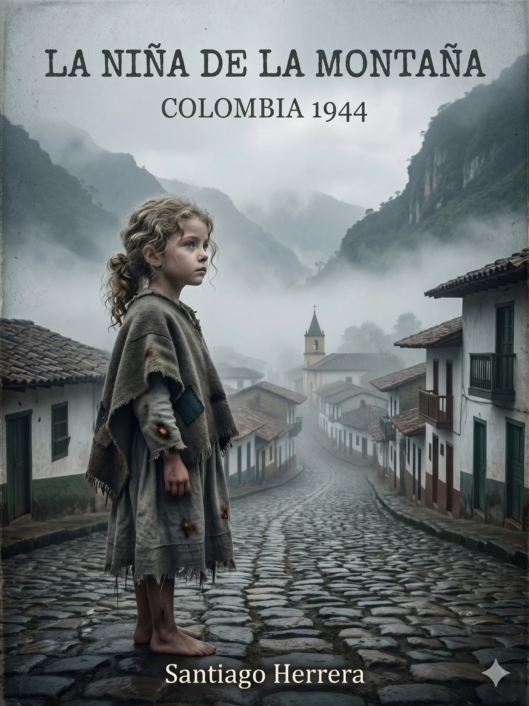
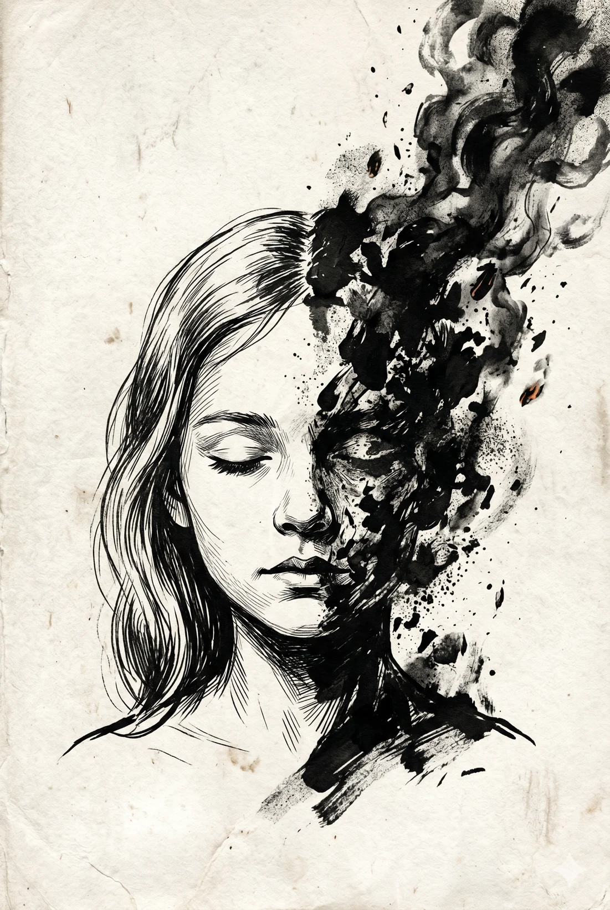
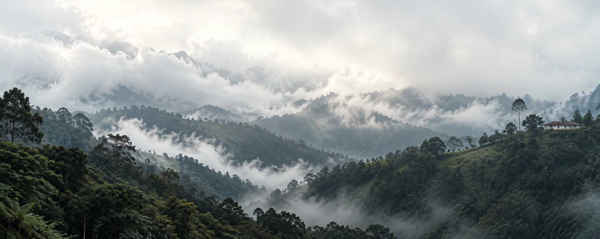

UNA HISTORIA DE SANTIAGO HERRERA
La niña de
la montaña.
Hay vidas que merecen quedarse.
COLOMBIA
1944
El pacto
de la niebla
La montaña siempre ha sabido guardar sus propios secretos. Es un monstruo silencioso de piedra y barro que no perdona a los débiles, ni olvida a quienes intentan domarla.
Era el 27 de febrero de 1944.
5merecen quedarse.

PRIMERA PARTE
Una vida.
Muchas batallas.
ANTES DE SER ABUELA, FUE UNA NIÑA.
La montaña la vio nacer.
La vida la enseñó a resistir.

Todo comienza
con una taza de café.
Un nieto se sienta frente a su abuela. Cree conocerla. Hasta que ella empieza a contar.
Detrás de su voz están el frío de San José, una infancia atravesada por el fuego, los años del hospital y una ciudad que promete otra vida. Una historia de heridas, ternura y una voluntad que se niega a rendirse.
«Para que entienda quién soy, primero tiene que entender de dónde vengo.»La niña de la montaña · Capítulo 1

SAN JOSÉ · NORTE DE ANTIOQUIA
No nació en la montaña.
Nació de la montaña.
Un lugar que también es un personaje.
Una raíz que nunca termina de soltarse.
EL RECORRIDO
Cinco capítulos.
Una fuerza que no se apaga.
De la niebla a la libertad.
Entra por el principio. O vuelve
a donde dejaste la historia.
A TU RITMO
Una historia para sentir.
Un espacio para leer.
El bautismo
de la ceniza
La casa de mi abuela siempre olía a café recién hecho. Llegué esa tarde, como tantas otras, y la encontré sentada en su silla de siempre, junto a la ventana, con un tinto humeante entre las manos arrugadas y la mirada perdida en algún punto del pasado.
El libro, contigo.
El texto completo de esta primera parte y las ilustraciones de la edición original.
Tu próxima página te espera.
Retoma tu lectura y guarda los pasajes a los que quieras volver, en este dispositivo.
Hazlo tuyo.
Tres ambientes, letra ajustable y búsqueda en todo el libro. Sin registro.
ESCRITA POR SANTIAGO HERRERA
Algunas historias
no deberían perderse.
Esta empieza en una montaña.
Y sigue en quien la lee.